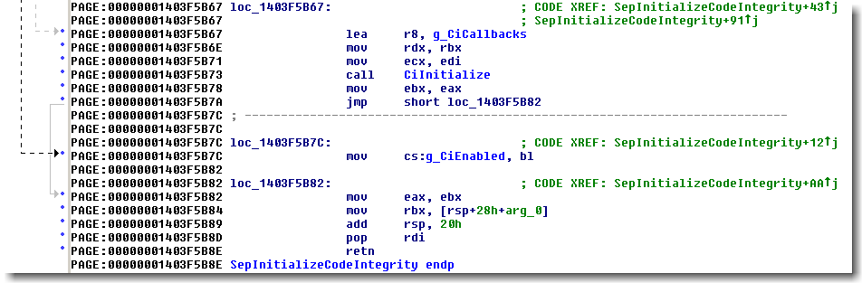
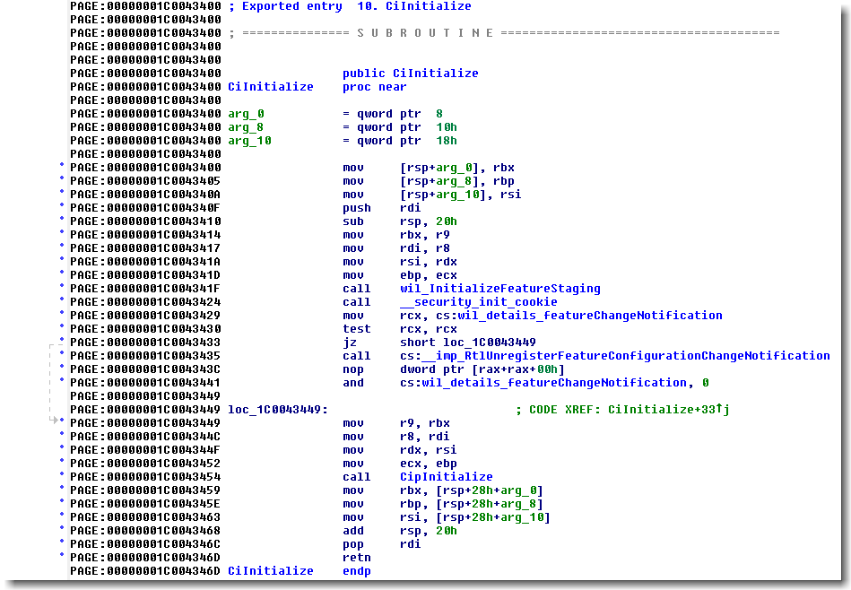

Topic Overview
------------------
2.) Usage Instructions
3.) Patch DSE on Windows Vista and Windows 7
4.) Patch DSE on Windows 8 and later up to Windows 10 Version 1703
5.) Patch DSE on Windows 10 Version 1709 and later
6.) Use BYOVD to patch kernel address space
7.) RTCore64 v4.6.2
8.) DBUtil v2.3
9.) DBUtil v2.5
10.) DBUtil v2.6
11.) DBUtil v2.7
12.) Will all these vulnerable drivers still work?
13.) How to block vulnerable drivers?
14.) Credits and Download Link
1.) Introduction
-------------------
2.) Usage Instructions
-------------------------
After the tool is started you should see detailed data about the actual DSE status. This will look like follows:
DSE-Patcher supports 3 main tasks. We can disable, enable and restore the DSE status by the corresponding buttons inside the dialog. The 3 buttons have the following functionality:
- Disable DSE will disable Driver Signature Enforcement and sets the variable to the value DSE Disable Value.
- Enable DSE will enable Driver Signature Enforcement and sets the variable to the value DSE Enable Value.
- Restore DSE will reset Driver Signature Enforcement and sets the variable to the value DSE Original Value.
g_CiOptions is
protected by PatchGuard. If the value is modified for too long Windows will show a blue screen.
Therefore we should load our unsigned driver as fast as possible and reenable DSE afterwards.The DSE Actual Value is the value that shows the momentary DSE status. The image base and patch addresses are calculated by the virtual kernel memory address based on the shown module name. This is NTOSKRNL.EXE for Windows Vista and Windows 7 and CI.DLL for Windows 8 or later. Pay attention that the DSE disable and enable values may differ from one OS to the other. This also depends on the operating system version like we will explain in the following chapter.
All installed vulnerable drivers will be cleanly uninstalled after DSE-Patcher has finished its mission. Some drivers like DBUtil v2.3 have some unloading problems, which are related to the driver and its unsupported stopping capability. In Windows 10 the service is removed on the next reboot, but the driver sys file has to be deleted manually by the user after the next reboot.
3.) Patch DSE on Windows Vista and Windows 7
---------------------------------------------------
g_CiEnabled in
ntoskrnl.exe. If DSE is enabled the variable is set to 1, otherwise it is zero. To calculate
and retrieve the variable we search for the byte sequence EB 06 88 1D inside ntoskrnl.exe,
which contains the jump, jump location loc_1403F5B82 and the move instruction in the following
assembler code:
Directly after this byte sequence the address of
g_CiEnabled is located. Based on this offset we
then calculate the variable address inside the kernel address space and patch it. Pay attention that
the patch may not work on checked debug builds of the operating system, because the byte sequence is
not found at all or is found at an invalid offset.
4.) Patch DSE on Windows 8 and later up to Windows 10 Version 1703
--------------------------------------------------------------------------
g_CiEnabled is now gone and can not be used anymore to circumvent DSE.
To patch DSE on Windows 8 and later, we have to change the variable g_CiOptions in ci.dll. If
DSE is enabled the variable is set to 6, otherwise it is zero. Pay attention that g_CiOptions
can also have many other values and combination of flags, which not all are known to the public. For
example during the Windows setup stage, the variable value can also change to something other than 6
if DSE is enabled. For these cases we implemented the restore feature of DSE-Patcher, which saves
the original DSE value on first startup and restores it later on. To calculate and retrieve the
variable we first search for a jump instruction with a length of 5 bytes inside the function
CiInitialize.We follow the jump to the function
CipInitialize and search for the byte sequence 89 0D inside
the function CipInitialize, which contains the g_CiOptions move instruction in the following
assembler code:
Directly after this byte sequence the address of
g_CiOptions is located. Based on this offset we
then calculate the variable address inside the kernel address space and patch it. This works with
Windows 8 and later up to Windows 10 Version 1703. Pay attention that the patch may not work on
checked debug builds of the operating system, because the byte sequence is not found at all or is
found at an invalid offset.
5.) Patch DSE on Windows 10 Version 1709 and later
--------------------------------------------------------
CipInitialize is replaced by a call instruction. In
addition Windows 10 Build 21H2 started to use calls for feature staging initialization before our
target call. Therefore we have to check for the call instruction and for all function parameters to
retrieve the correct code location. To calculate and retrieve the g_CiOptions variable we first
search for the function parameters and the call instruction with a length of 5 bytes inside the
function CiInitialize.We follow the call to the function
CipInitialize and search for the byte sequence 89 0D inside
the function CipInitialize, which contains the g_CiOptions move instruction in the following
assembler code:Directly after this byte sequence the address of
g_CiOptions is located. Based on this offset we
then calculate the variable address inside the kernel address space and patch it. Pay attention that
the patch may not work on checked debug builds of the operating system, because the byte sequence is
not found at all or is found at an invalid offset.The aforementioned feature staging initialization calls in
CiInitialize before our target call
will look like follows on Windows 10 Build 21H2:
6.) Use BYOVD to patch kernel address space
-------------------------------------------------
g_CiEnabled and g_CiOptions we have to access the kernel
address space, which is protected from user mode applications like DSE-Patcher. A simple way to do
a memory patch from user mode is by using a driver that can access the kernel address space. In
theory we would be able to code our own driver to do the magic, but this one will also not load due
to enabled DSE. Therefore the best approach in our case would be to use an already signed driver,
which can write memory. Here the Bring Your Own Vulnerable Driver (BYOVD) exploits come to mind.
The exploits use a vulnerable, fully signed driver, which is first loaded and after that an exploit
is run to read or write kernel address space. What sounds complicated first, will be an easy task if
you look at the source code of tools like DSEFix, KDU or DSE-Patcher. All of the vulnerable drivers
used by DSE-Patcher are described in the following chapters.
7.) RTCore64 v4.6.2
-----------------------
http://download-eu2.guru3d.com/afterburner/[Guru3D.com]-MSIAfterburnerSetup462Beta2.zip
You only have to unpack the ZIP file and open MSIAfterburnerSetup462Beta2.exe with 7-Zip. Directly in the root of the archive we can find the vulnerable RTCore64.sys driver. The RTCore64 v4.6.2 driver file has the following properties:
Name : RTCore64.sys Type : Driver sys file CVE ID : CVE-2019-16098 SHA-1 : F6F11AD2CD2B0CF95ED42324876BEE1D83E01775 SHA-256 : 01AA278B07B58DC46C84BD0B1B5C8E9EE4E62EA0BF7A695862444AF32E87F1FD MD5 : 2D8E4F38B36C334D0A32A7324832501DThe vulnerability exists since 2019 and allows authenticated users to read and write to arbitrary memory, I/O ports and MSRs. This can be exploited for privilege escalation and code execution under high privileges. We only use the driver to read and write the DSE variable to disable Driver Signature Enforcement.
To start the magic we simply install the driver, open a device handle to it and send the I/O control code
0x80002048 for memory reads and 0x8000204C for memory writes. RTCore64 supports Windows Vista
and later.
8.) DBUtil v2.3
-----------------
https://dl.dell.com/FOLDER05600255M/1/OptiPlex_7070_1.0.2.exe
https://dl.dell.com/FOLDER05648416M/1/OptiPlex_7070_1.0.3.exe
https://dl.dell.com/FOLDER05780067M/1/OptiPlex_7070_1.1.3.exe
We can get there from the Dell driver search pages at the following URLs:
https://www.dell.com/support/home/en-us/drivers/driversdetails?driverid=mtc81
https://www.dell.com/support/home/en-us/drivers/driversdetails?driverid=c6fh4
https://www.dell.com/support/home/en-us/drivers/driversdetails?driverid=6fd9t
Extracting the driver from the executable is a bit more complicated. We have to load the executable OptiPlex_7070_1.0.2.exe in OllyDbg and stop execution directly after the driver unpacking is finished. To manually unpack DBUtil v2.3 follow these steps:
- Attention: These steps have to be done on an x64 version of Windows, otherwise the 32 bit driver instead of the 64 bit driver is unpacked!
- install and run OllyDbg v1.10 as administrator
- Menu > File > Open > select OptiPlex_7070_1.0.2.exe > Open
- right click the disassembler window > Search for > Name (label) in current module
- in the Names window type
OpenServiceA> right click it > Find references to import > right click > Follow in Disassembler - press F2 to set a breakpoint on
OpenServiceA - press F9 to run the executable
Even if we have no Dell machine the executable will run and unpack the driver for us. - the executable will stop execution and hit our breakpoint at
OpenServiceA - press F8 one time to single step > in the register window right click on the value of
EAXand choose "Zero"
This will zero a valid handle returned fromOpenServiceAfunction call. Only without a valid handle the driver will unpack itself more than once. The DBUtil v2.3 only unpacks itself for the first time the executable is run and after that stays resident in memory until the next reboot. - continue to single step with F8 until after the next OptiPlex call
- the disassembler window should look like follows:
- directly after the call to OptiPlex.000A4190 we can find the unpacked driver at C:\Users\<UserName>\AppData\Local\Temp\DBUtil_2_3.Sys
- we can now copy the driver and close OllyDbg
Name : DBUtil_2_3.Sys Type : Driver sys file CVE ID : CVE-2021-21551 SHA-1 : C948AE14761095E4D76B55D9DE86412258BE7AFD SHA-256 : 0296E2CE999E67C76352613A718E11516FE1B0EFC3FFDB8918FC999DD76A73A5 MD5 : C996D7971C49252C582171D9380360F2The vulnerability exists since 2021 and allows authenticated users to read and write to arbitrary memory. This can be exploited for privilege escalation and code execution under high privileges. We only use the driver to read and write the DSE variable to disable Driver Signature Enforcement.
We simply install the driver, open a device handle to it and send the I/O control code
0x9B0C1EC4
for memory reads and 0x9B0C1EC8 for memory writes. DBUtil v2.3 supports Windows Vista and later
up to Windows 11 Build 21H2. Pay attention that the driver does not support Windows 11 Build 22H2,
because the driver blocklist is correctly updated by Microsoft. This will block the driver from
loading. In addition the driver can only be manually deleted on Windows 10 after a reboot, because
it is not stoppable and running. On Windows 7 the deletion works without any problems.
9.) DBUtil v2.5
-----------------
https://dl.dell.com/FOLDER06193974M/1/OptiPlex_7070_1.3.1.exe
https://dl.dell.com/FOLDER06312901M/1/OptiPlex_7070_1.4.4.exe
https://dl.dell.com/FOLDER06364814M/1/OptiPlex_7070_1.5.0.exe
https://dl.dell.com/FOLDER06597528M/1/OptiPlex_7070_1.5.1.exe
https://dl.dell.com/FOLDER06708159M/1/OptiPlex_7070_1.7.0.exe
We can get there from the Dell driver search pages at the following URLs:
https://www.dell.com/support/home/en-us/drivers/driversdetails?driverid=g5cnt
https://www.dell.com/support/home/en-us/drivers/driversdetails?driverid=pg9gp
https://www.dell.com/support/home/en-us/drivers/driversdetails?driverid=jy83m
https://www.dell.com/support/home/en-us/drivers/driversdetails?driverid=5kjvt
https://www.dell.com/support/home/en-us/drivers/driversdetails?driverid=jyjfc
Extracting the driver from the executable is a bit more complicated. We have to load the executable OptiPlex_7070_1.3.1.exe in OllyDbg and stop execution directly after the driver unpacking is finished. To manually unpack DBUtil v2.5 follow these steps:
- Attention: These steps have to be done on an x64 version of Windows, otherwise the 32 bit driver instead of the 64 bit driver is unpacked! We also can not use Windows 7 anymore, because some DLL imports are missing.
- install and run OllyDbg v1.10 as administrator
- Menu > File > Open > select OptiPlex_7070_1.3.1.exe > Open
- right click the disassembler window > Search for > Name (label) in current module
- in the Names window type
CreateProcessA> right click it > Find references to import > right click > Set breakpoint on every command - go to the disassembler window and press F9 to run the executable
Even if we have no Dell machine the executable will run and unpack the driver for us. - the executable will stop execution and hit our breakpoint at
CreateProcessA - the disassembler window should look like follows:
- after the breakpoint has triggered we can find the unpacked driver files in the directory C:\Users\<UserName>\AppData\Local\Temp
- the driver consists of the following files:
- C9632CF058AE4321B6B0B5EA39B710FE
- DBUtilDrv2.cat
- DBUtilDrv2.inf
- DBUtilDrv2.Sys
- we can now copy the driver files and close OllyDbg
CreateProcessA. This exe takes the INF file path as first argument to install the driver.
Name : DBUtilDrv2.Sys Type : Driver sys file CVE ID : CVE-2021-36276 SHA-1 : 90A76945FD2FA45FAB2B7BCFDAF6563595F94891 SHA-256 : 2E6B339597A89E875F175023ED952AAAC64E9D20D457BBC07ACF1586E7FE2DF8 MD5 : DACB62578B3EA191EA37486D15F4F83C Name : DBUtilDrv2.inf Type : Driver inf file CVE ID : CVE-2021-36276 SHA-1 : C40EBB395CB79C3CF7CA00F59F4DC17930435FC5 SHA-256 : 4E2AA67DAAB4C4ACAC3D6D13490F93D42516FA76B8FDA87C880969FC793A3B42 MD5 : A642273BEF0CA2D15F7D5E04673A4FC4 Name : DBUtilDrv2.cat Type : Driver catalog file CVE ID : CVE-2021-36276 SHA-1 : 23BBC48543A46676C5CB5E33A202D261A33704FE SHA-256 : 4B93FC56DB034BFEBB227B1E2AF1B5E71CC663FFEFFE3B59618F634C22DB579D MD5 : E6CA7859C63FC37D6C4357C315F13CF4 Name : C9632CF058AE4321B6B0B5EA39B710FE Type : Driver installer file CVE ID : CVE-2021-36276 SHA-1 : D568AC037ACA15BF5DF653F56A11021E15C29EA6 SHA-256 : 43DBBD5D6E65A62EB820967E3A302B0EB0D29DA644BDD2177F485EAD02EF83E4 MD5 : 014E30A60EB1497D9F88833606D3454CThe executable driver installer file C9632CF058AE4321B6B0B5EA39B710FE changes slightly from one version to the other.
The vulnerability exists since 2021 and allows authenticated users to read and write to arbitrary memory. This can be exploited for privilege escalation and code execution under high privileges. We only use the driver to read and write the DSE variable to disable Driver Signature Enforcement.
We simply install the driver, open a device handle to it and send the I/O control code
0x9B0C1EC4
for memory reads and 0x9B0C1EC8 for memory writes. DBUtil v2.5 supports Windows 10 version 1507 and
later. Pay attention that the driver does not install on older OSs, because the dependent KMDF
library version 1.15 is not present.
10.) DBUtil v2.6
------------------
https://dl.dell.com/FOLDER07084865M/1/OptiPlex_7070_1.7.2.exe
We can get there from the Dell driver search page at the following URL:
https://www.dell.com/support/home/en-us/drivers/driversdetails?driverid=kygvt
The driver is manually extracted in the same way as DBUtil v2.5. The DBUtil v2.6 driver files have the following properties:
Name : DBUtilDrv2.Sys Type : Driver sys file CVE ID : CVE-2021-36276 SHA-1 : 79FA541D22A2707B688890AA5F7CEB4016100823 SHA-256 : 4720B202C4E6DD919222FE7B1F458705C0ED1CCC17EC4BA72A31EEF8559B87C7 MD5 : 5EC88D1DD3DB03CE51DD718C7BB801ED Name : DBUtilDrv2.inf Type : Driver inf file CVE ID : CVE-2021-36276 SHA-1 : 03906D454CE6AD329FA9CC97BBDB0623F5F9A495 SHA-256 : 6E8A9FA6A0354B1189A36EB9E29673050BCACB003DE8D15916491E6231E4BC1C MD5 : 18D6702C41EA493149E727EBB8FFD701 Name : DBUtilDrv2.cat Type : Driver catalog file CVE ID : CVE-2021-36276 SHA-1 : 3811C12BB204041D9110ADE387C50AC6C57422E2 SHA-256 : 2A354D4D83F21702AF61FFAAC1ACC385C77AB9ADCBB721EABD4CA812D6108D5F MD5 : BCA2B79EE9BFD264289C88358859671D Name : C9632CF058AE4321B6B0B5EA39B710FE Type : Driver installer file CVE ID : CVE-2021-36276 SHA-1 : 118BB07A29EF7129BB01C97EA6FB8AAB0FD62FB3 SHA-256 : CAB560CDA02FA0ECB0C7F5E6B9903971A1DB93B9B2B2D708CD656DE90963D57A MD5 : 2AECF86EC35BAE06E8E462F71DF42B42The vulnerability exists since 2021 and allows authenticated users to read and write to arbitrary memory. This can be exploited for privilege escalation and code execution under high privileges. We only use the driver to read and write the DSE variable to disable Driver Signature Enforcement.
We simply install the driver, open a device handle to it and send the I/O control code
0x9B0C1EC4
for memory reads and 0x9B0C1EC8 for memory writes. DBUtil v2.6 supports Windows 10 version 1507 and
later. Pay attention that the driver does not install on older OSs, because the dependent KMDF
library version 1.15 is not present.
11.) DBUtil v2.7
------------------
https://dl.dell.com/FOLDER07439441M/1/OptiPlex_7070_1.8.4.exe
https://dl.dell.com/FOLDER07580840M/1/OptiPlex_7070_1.9.1.exe
https://dl.dell.com/FOLDER07775230M/1/OptiPlex_7070_1.10.0.exe
https://dl.dell.com/FOLDER07967056M/1/OptiPlex_7070_1.11.0.exe
https://dl.dell.com/FOLDER08013315M/1/OptiPlex_7070_1.12.0.exe
https://dl.dell.com/FOLDER08359232M/1/OptiPlex_7070_1.13.0.exe
https://dl.dell.com/FOLDER08572354M/1/OptiPlex_7070_1.15.0.exe
https://dl.dell.com/FOLDER08745871M/1/OptiPlex_7070_1.16.0.exe
https://dl.dell.com/FOLDER09066611M/1/OptiPlex_7070_1.18.0.exe
We can get there from the Dell driver search pages at the following URLs:
https://www.dell.com/support/home/en-us/drivers/driversdetails?driverid=d7wt0
https://www.dell.com/support/home/en-us/drivers/driversdetails?driverid=pktf9
https://www.dell.com/support/home/en-us/drivers/driversdetails?driverid=w9c8g
https://www.dell.com/support/home/en-us/drivers/driversdetails?driverid=dhvdy
https://www.dell.com/support/home/en-us/drivers/driversdetails?driverid=jtykv
https://www.dell.com/support/home/en-us/drivers/driversdetails?driverid=njffg
https://www.dell.com/support/home/en-us/drivers/driversdetails?driverid=xvvwm
https://www.dell.com/support/home/en-us/drivers/driversdetails?driverid=dwdwp
https://www.dell.com/support/home/en-us/drivers/driversdetails?driverid=kfnvy
The driver is manually extracted in the same way as DBUtil v2.5. The DBUtil v2.7 driver files have the following properties:
Name : DBUtilDrv2.Sys Type : Driver sys file CVE ID : no CVE ID present yet SHA-1 : B03B1996A40BFEA72E4584B82F6B845C503A9748 SHA-256 : 71FE5AF0F1564DC187EEA8D59C0FBC897712AFA07D18316D2080330BA17CF009 MD5 : D104621C93213942B7B43D65B5D8D33E Name : DBUtilDrv2.inf Type : Driver inf file CVE ID : no CVE ID present yet SHA-1 : 19F8DA3FE9DDBC067E3715D15AED7A6530732AB5 SHA-256 : 56ED7FF7299C83B307282CE8D1DEF51D72A3663249E72A32C09F6264348B1DA2 MD5 : B87944DCC444E4C6CE9BB9FB8A9C0DEF Name : DBUtilDrv2.cat Type : Driver catalog file CVE ID : no CVE ID present yet SHA-1 : 06F2B629E7303AC1254B52EC0560C34D72B46155 SHA-256 : C77C24E945ACC73D6B723F60BCDC0330FF501EEA34B7DA95061101DD1120392A MD5 : DE39EE41D03C97E37849AF90E408ABBE Name : C9632CF058AE4321B6B0B5EA39B710FE Type : Driver installer file CVE ID : no CVE ID present yet SHA-1 : F1C876DCB8F330B976CF31BE47F9D510FD76E2D8 SHA-256 : CD2688A74A151B03282388DADB8B6AACA309F2535C8B2B21D1243846D2B259DC MD5 : 94758F0D75BC41190B05EE25BA565FB9 Name : WdfCoinstaller01009.dll Type : WdfCoinstaller for Kernel-Mode Driver Framework (KMDF) v1.9 CVE ID : no CVE ID present yet SHA-1 : C1E821B156DBC3FEB8A2DB4FDB9CF1F5A8D1BE6B SHA-256 : 3B9264416A78F5EAB2812CD46B14F993815E9DBF5BD145B3876C2F0F93B98521 MD5 : 290464641660EA5CFDDA076CE6DA27C6The executable driver installer file "C9632CF058AE4321B6B0B5EA39B710FE" changes slightly from one version to the other.
The vulnerability exists since 2021 and allows authenticated users to read and write to arbitrary memory. It is not yet proved the driver can be used for privilege escalation and code execution under high privileges, but we are pretty sure it will still work. We only use the driver to read and write the DSE variable to disable Driver Signature Enforcement.
We simply install the driver, open a device handle to it and send the I/O control code
0x9B0C1EC4
for memory reads and 0x9B0C1EC8 for memory writes. DBUtil v2.7 supports Windows 8 and later. Pay
attention that to install the driver on Windows 7 with Service Pack 1 you have to apply the Windows
update KB3033929 for SHA256 support, because Vista and Windows 7 can only handle drivers that are
signed with the digest algorithm SHA1. This driver and the KB-Update will not work for operating
systems older than Windows 7 with Service Pack 1.
12.) Will all these vulnerable drivers still work?
--------------------------------------------------
The problem is not by Microsoft alone, because the driver vendors and creators have to revoke the signing certificates of the driver. Dell for example does not revoke the certificates for DBUtil v2.3, v2.5, v2.6 and v2.7, because the certs are also used to sign other applications and drivers, which will stop working after the certificate is blocked globally inside the OS. This means that the above security vulnerabilities may be present many years from now on. At the moment we can not even find a CVE entry for the newest driver DBUtil v2.7. The best way to stop these exploits would be revoking a certificate associated with the vulnerable driver. The only way to stop malware using these exploited drivers is to blacklist them manually.
13.) How to block vulnerable drivers?
----------------------------------------
To create an example WDAC policies for all 5 vulnerable drivers that are supported by DSE-Patcher do the following steps:
- create an empty XML file C:\Users\Public\DriverBlocklist.xml, copy this content to the file and save it:
<?xml version="1.0" encoding="utf-8"?> <SiPolicy xmlns="urn:schemas-microsoft-com:sipolicy"> <VersionEx>10.0.25210.0</VersionEx> <PlatformID>{2E07F7E4-194C-4D20-B7C9-6F44A6C5A234}</PlatformID> <Rules> <Rule> <Option>Enabled:Unsigned System Integrity Policy</Option> </Rule> <Rule> <Option>Enabled:Advanced Boot Options Menu</Option> </Rule> <!-- <Rule> <Option>Enabled:Audit Mode</Option> </Rule> --> <Rule> <Option>Disabled:Script Enforcement</Option> </Rule> <Rule> <Option>Enabled:Update Policy No Reboot</Option> </Rule> </Rules> <!--File Rules--> <FileRules> <Allow ID="ID_ALLOW_ALL_1" FriendlyName="" FileName="*" /> <Allow ID="ID_ALLOW_ALL_2" FriendlyName="" FileName="*" /> <Deny ID="ID_DENY_RTCORE_64_SHA1" FriendlyName="64-bit MSI RTCore64 v4.6.2 RTCore64.sys Hash Sha1" Hash="4A68C2D7A4C471E062A32C83A36EEDB45A619683" /> <Deny ID="ID_DENY_RTCORE_64_SHA256" FriendlyName="64-bit MSI RTCore64.sys Hash Sha256" Hash="478C36F8AF7844A80E24C1822507BEEF6314519185717EC7AE224A0E04B2F330" /> <Deny ID="ID_DENY_RTCORE_64_SHA1_PAGE" FriendlyName="64-bit MSI RTCore64.sys Hash Page Sha1" Hash="84152FA241C3808F8C7752964589C957E440403F" /> <Deny ID="ID_DENY_RTCORE_64_SHA256_PAGE" FriendlyName="64-bit MSI RTCore64.sys Hash Page Sha256" Hash="A807532037A3549AE3E046F183D782BCB78B6193163EA448098140563CF857CB" /> <Deny ID="ID_DENY_DBUTIL_V23_64_SHA1" FriendlyName="64-bit Dell DBUtil v2.3 DBUtil_2_3.Sys Hash Sha1" Hash="E3C1DD569AA4758552566B0213EE4D1FE6382C4B" /> <Deny ID="ID_DENY_DBUTIL_V23_64_SHA256" FriendlyName="64-bit Dell DBUtil v2.3 DBUtil_2_3.Sys Hash Sha256" Hash="FE4270A61DBED978C28B2915FCC2826D011148DCB7533FA8BD072DDCE5944CEF" /> <Deny ID="ID_DENY_DBUTIL_V23_64_SHA1_PAGE" FriendlyName="64-bit Dell DBUtil v2.3 DBUtil_2_3.Sys Hash Page Sha1" Hash="E09B5E80805B8FE853EA27D8773E31BFF262E3F7" /> <Deny ID="ID_DENY_DBUTIL_V23_64_SHA256_PAGE" FriendlyName="64-bit Dell DBUtil v2.3 DBUtil_2_3.Sys Hash Page Sha256" Hash="7E2AD3D6D76F4FCD4583B865FFC12DE6C44FC16CBCBB81D480CB067F2A860422" /> <Deny ID="ID_DENY_DBUTIL_V25_64_SHA1" FriendlyName="64-bit Dell DBUtil v2.5 DBUtilDrv2.sys Hash Sha1" Hash="6BC2AB0F03D7A58685A165B519E8FEE6937526A6" /> <Deny ID="ID_DENY_DBUTIL_V25_64_SHA256" FriendlyName="64-bit Dell DBUtil v2.5 DBUtilDrv2.sys Hash Sha256" Hash="D7C683EF033AC2DC4DFA0DC61F39931F91C0E8FD19E613F664CB03E14112EF6E" /> <Deny ID="ID_DENY_DBUTIL_V25_64_SHA1_PAGE" FriendlyName="64-bit Dell DBUtil v2.5 DBUtilDrv2.sys Hash Page Sha1" Hash="66B2E2438725B576428CBEAE3E481148B4B5FD8C" /> <Deny ID="ID_DENY_DBUTIL_V25_64_SHA256_PAGE" FriendlyName="64-bit Dell DBUtil v2.5 DBUtilDrv2.sys Hash Page Sha256" Hash="C60578FAD95216EF74BCD9661A562C0DDC2C8697D64B546F59A7EF85F71D3814" /> <Deny ID="ID_DENY_DBUTIL_V26_64_SHA1" FriendlyName="64-bit Dell DBUtil v2.6 DBUtilDrv2.sys Hash Sha1" Hash="4D1E9A5F3F05F244E68286723E70F3202FB4E4A5" /> <Deny ID="ID_DENY_DBUTIL_V26_64_SHA256" FriendlyName="64-bit Dell DBUtil v2.6 DBUtilDrv2.sys Hash Sha256" Hash="462CD6DB3C0BE714DD751466D5871C111812FAF392C468C81A88CB0DA4783458" /> <Deny ID="ID_DENY_DBUTIL_V26_64_SHA1_PAGE" FriendlyName="64-bit Dell DBUtil v2.6 DBUtilDrv2.sys Hash Page Sha1" Hash="D66BC7C933EC056A9B303AE9A094CC6DA1F83823" /> <Deny ID="ID_DENY_DBUTIL_V26_64_SHA256_PAGE" FriendlyName="64-bit Dell DBUtil v2.6 DBUtilDrv2.sys Hash Page Sha256" Hash="68D50D19203D6045C9385B4B5D2CC92A8F3946507F5BC1E566B79C18E89DDB8D" /> <Deny ID="ID_DENY_DBUTIL_V27_64_SHA1" FriendlyName="64-bit Dell DBUtil v2.7 DBUtilDrv2.sys Hash Sha1" Hash="D46AE9BCC746CA408FBB55FB0D61B638720A8F25" /> <Deny ID="ID_DENY_DBUTIL_V27_64_SHA256" FriendlyName="64-bit Dell DBUtil v2.7 DBUtilDrv2.sys Hash Sha256" Hash="7BACB353363CC29F7F3815A9D01E85CD86202D92378D1AB1B11DF1AB2F42F40A" /> <Deny ID="ID_DENY_DBUTIL_V27_64_SHA1_PAGE" FriendlyName="64-bit Dell DBUtil v2.7 DBUtilDrv2.sys Hash Page Sha1" Hash="F0A5923AEF58A074FC1E388BDF086078BFC514EB" /> <Deny ID="ID_DENY_DBUTIL_V27_64_SHA256_PAGE" FriendlyName="64-bit Dell DBUtil v2.7 DBUtilDrv2.sys Hash Page Sha256" Hash="17AE4DFC31BDE054108E5598551515F4B4B46367F6D4324F087201B8038A4E3D" /> </FileRules> <!--Driver Signing Scenarios--> <SigningScenarios> <SigningScenario Value="131" ID="ID_SIGNINGSCENARIO_DRIVERS_1" FriendlyName="Auto generated policy on 09-19-2022"> <ProductSigners> <FileRulesRef> <FileRuleRef RuleID="ID_ALLOW_ALL_1" /> <FileRuleRef RuleID="ID_DENY_RTCORE_64_SHA1" /> <FileRuleRef RuleID="ID_DENY_RTCORE_64_SHA256" /> <FileRuleRef RuleID="ID_DENY_RTCORE_64_SHA1_PAGE" /> <FileRuleRef RuleID="ID_DENY_RTCORE_64_SHA256_PAGE" /> <FileRuleRef RuleID="ID_DENY_DBUTIL_V23_64_SHA1" /> <FileRuleRef RuleID="ID_DENY_DBUTIL_V23_64_SHA256" /> <FileRuleRef RuleID="ID_DENY_DBUTIL_V23_64_SHA1_PAGE" /> <FileRuleRef RuleID="ID_DENY_DBUTIL_V23_64_SHA256_PAGE" /> <FileRuleRef RuleID="ID_DENY_DBUTIL_V25_64_SHA1" /> <FileRuleRef RuleID="ID_DENY_DBUTIL_V25_64_SHA256" /> <FileRuleRef RuleID="ID_DENY_DBUTIL_V25_64_SHA1_PAGE" /> <FileRuleRef RuleID="ID_DENY_DBUTIL_V25_64_SHA256_PAGE" /> <FileRuleRef RuleID="ID_DENY_DBUTIL_V26_64_SHA1" /> <FileRuleRef RuleID="ID_DENY_DBUTIL_V26_64_SHA256" /> <FileRuleRef RuleID="ID_DENY_DBUTIL_V26_64_SHA1_PAGE" /> <FileRuleRef RuleID="ID_DENY_DBUTIL_V26_64_SHA256_PAGE" /> <FileRuleRef RuleID="ID_DENY_DBUTIL_V27_64_SHA1" /> <FileRuleRef RuleID="ID_DENY_DBUTIL_V27_64_SHA256" /> <FileRuleRef RuleID="ID_DENY_DBUTIL_V27_64_SHA1_PAGE" /> <FileRuleRef RuleID="ID_DENY_DBUTIL_V27_64_SHA256_PAGE" /> </FileRulesRef> </ProductSigners> </SigningScenario> <SigningScenario Value="12" ID="ID_SIGNINGSCENARIO_WINDOWS" FriendlyName="Auto generated policy on 09-19-2022"> <ProductSigners> <FileRulesRef> <FileRuleRef RuleID="ID_ALLOW_ALL_2" /> </FileRulesRef> </ProductSigners> </SigningScenario> </SigningScenarios> <HvciOptions>0</HvciOptions> <Settings> <Setting Provider="PolicyInfo" Key="Information" ValueName="Name"> <Value> <String>Microsoft Windows Driver Policy</String> </Value> </Setting> <Setting Provider="PolicyInfo" Key="Information" ValueName="Id"> <Value> <String>10.0.25210.0</String> </Value> </Setting> </Settings> <PolicyTypeID>{A244370E-44C9-4C06-B551-F6016E563076}</PolicyTypeID> </SiPolicy>
# convert policy to binary form and save it to "C:\Windows\System32\CodeIntegrity\SiPolicy.p7b" ConvertFrom-CIPolicy -XmlFilePath "C:\Users\Public\DriverBlocklist.xml" -BinaryFilePath "$Env:windir\System32\CodeIntegrity\SiPolicy.p7b" # update policy without reboot Invoke-CimMethod -Namespace "root\Microsoft\Windows\CI" -ClassName PS_UpdateAndCompareCIPolicy -MethodName Update -Arguments @{ FilePath = "$Env:windir\System32\CodeIntegrity\SiPolicy.p7b" }
If you want to add a custom vulnerable driver to the XML file, you have to calculate the SHA1 and SHA256 hashes and page hashes. These differ from the normal SHA1 and SHA256 file hash, because some data like the executable checksum and the appended certificates are left out. An easy way to calculate the correct Authenticode checksums is to use the tool Authenticode Hash Calc by hfiref0x. You can download the source code and the binary at the following URL:
https://github.com/hfiref0x/AuthHashCalc
14.) Credits and Download Link
----------------------------------
- hfiref0x (DSEFix, Kernel Driver Utility, Authenticode Hash Calculator)
- Vyacheslav Patkov (Hacker Disassembler Engine 64)
Thanks for your attention and interest in this topic.
Greets Kai Schtrom
Version 1.0 Nov 27, 2022